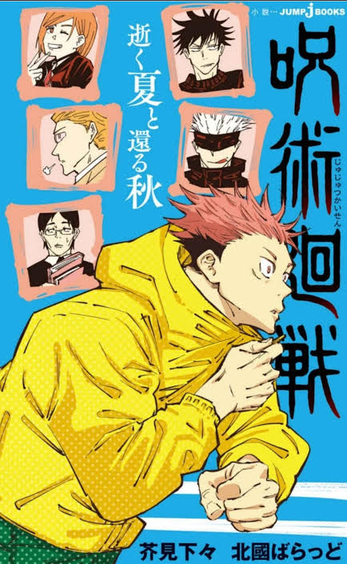
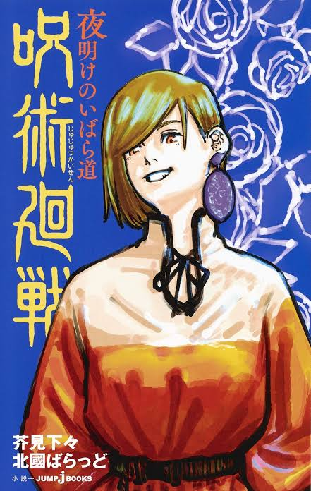
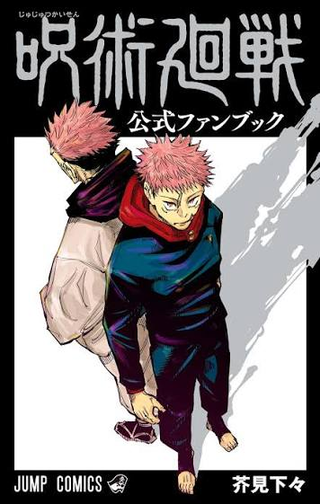

Related
Music, light novels, and books for fans.
OST
Opening and Ending Themes
JJK 0


Season 1


Season 2


Season 3


Light Novels And Fanbook
Official extras beyond the manga and anime.

Light NovelJujutsu Kaisen: Summer of Ashes, Autumn of Dust
An original side-story novel set in the Jujutsu Kaisen universe, written by Ballad Kitaguni.

Light NovelJujutsu Kaisen: Thorny Road at Dawn
A second original novel that explores more of the world and characters outside the manga’s main plot.

BookJujutsu Kaisen Official Fanbook
The official guide with character profiles, interviews, and extra material from the series.
Quick Answers
A few questions that fans ask all the time.
"
Is the series finished?
The manga ended on September 30, 2024.
"
Where can I find spoiler-free info?
Stay on the Story and Anime pages.
"
Is there a sequel?
Yes, a spin-off called Modulo.
"
Who made it?
Gege Akutami wrote and drew it; MAPPA animated it.
"
Is Gege Akutami male or female?
Male. Evidence is in an early-2021 interview between Gege Akutami and comedian/host Kendou Kobayashi on Mando Kobayashi (Fuji TV One).
About This Fan Site
This is an unofficial fan project. Jujutsu Kaisen belongs to Gege Akutami and its publishers.